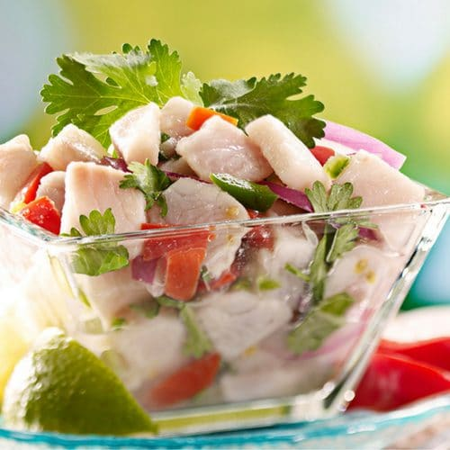

Ensalada de Carrucho

La Ensalada de Carrucho es una de las recetas tradicionales de gastronomía
tradicional de Puerto Rico. A este molusco también se le conoce como Lambi
en República Dominica o caracol en la región costera de centro y sur
América.
Esta receta contiene el exquisito sabor caribeño que la hace destacar
entre las formas de hacer ensaladas con mariscos, así que esperamos que la
disfrutes.
Ingredientes
- 4 libras de carrucho
- ½ pimiento verde
- 1 tomate
- ½ pimiento rojo
- 2 cucharadas de vinagre
- ½ cebolla
- Cilantro picado al gusto
- ½ pimiento amarillo
- El jugo de medio limón
- Cebolla en polvo
- Ajo en Polvo al gusto
- Aceite de oliva al gusto
- Sal y pimienta al gusto
Cómo hacer ensalada de carrucho boricua
-
Primero, ponemos a cocinar el carrucho en una olla con agua, dependiendo
de su frescura podría ser entre 45 minutos a 2 horas.
- Después lo cortamos en cuadritos y ponemos en un bowl.
-
Luego cortaremos los pimientos, la cebolla y el tomate en cuadritos
pequeños para mezclarlos con el carrucho.
-
También picaremos un poco de cilantro y lo mezclaremos con los demás
ingredientes, esto le dará un olor y sabor agradable.
-
Por ultimo sazonaremos la ensalada de carrucho con vinagre, aceite de
oliva, ajo y sal en polvo y mezclaremos.
-
A continuación daremos el toque final con el jugo de limón, la sal y
pimienta, siempre verificando la sazón para que la ensalada tenga un
buen sabor.
-
Finalmente, nuestra Receta de Ensalada de Carrucho esta lista para y
solo falta reservarla en la nevera por al menos 2 horas para servirse,
el sabor es buenísimo y a tu familia le encantará.
Back